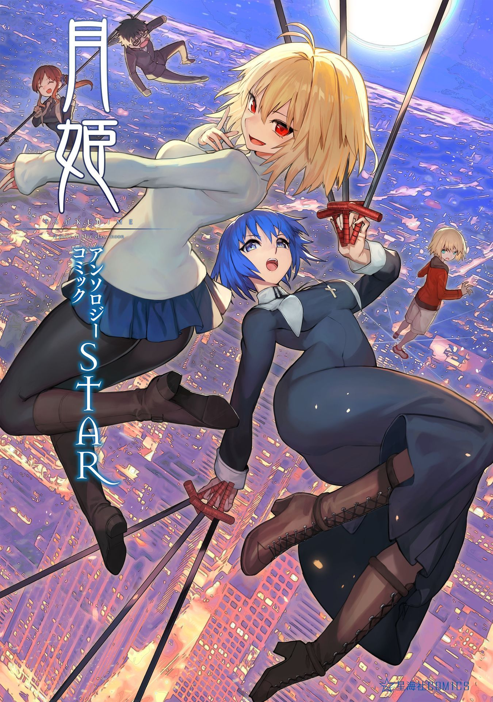
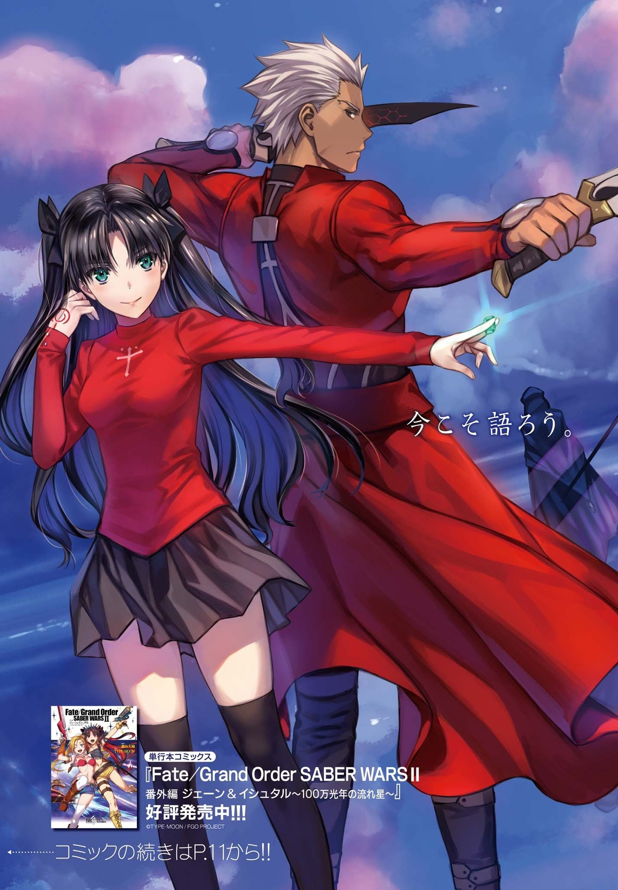

Tsukihime－A piece of blue glass moon－Anthology Comic STAR
An anthology of Tsukihime－A piece of blue glass moon－created through a collaboration of artists who love Tsukihime.
Read

Fate/Stay Night - Unlimited Blade Works
Manga adaptation of Unlimited Blade Works route of Fate/stay Night Visual novel by Type-Moon
Read